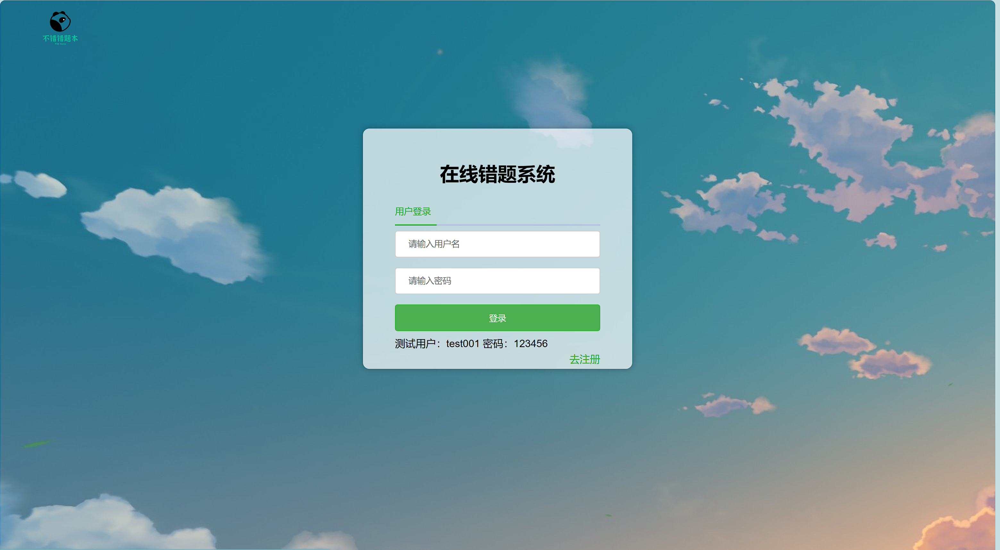

项目亮点：
使用百度云文字识别api、语音识别api实现添加错题时文本的快速导入
使用EasyExcel实现错题的excel批量导入和错题导出为excel
使用Echarts实现对用户数据进行统计并可视化展示
使用用docker搭建部署环境，集成Jenkins持续集成持续部署
使用阿里云OSS对象存储，实现图片的上传和访问
集成ChatGPT在线解答题目

项目亮点：
使用Nacos作为服务注册中心、配置中心，使用GateWay做网关，使用Nginx做负载均衡和反向代理，
提高安全性和系统的性能
使用Redis为首页及其他热门数据进行缓存，减轻数据库压力，提高项目响应速度
使用EasyExcel实现数据的批量导入和导出
使用阿里云OSS对象存储和视频点播，实现图片的上传和访问和项目视频资源的上传和访问，使用腾讯
云短信服务实现手机号验证码登录
集成spring security做权限验证，提升后台系统安全性
使用jwt代替原来的session，实现单点登录，保持用户状态，使用docker部署服务器环境，简化操作，
使用Jenkins持续集成和持续部署
项目亮点：
结合java反射机制、缓存双删机制、布隆过滤器、和kafka 消息队列来开发项目后端服务套件。实现数
据的统一读写、缓存和持久化，提高代码复用率。
使用kafka和websocket技术实现实时通讯，通过心跳监测和超时设置等处理异常情况和连接问题。
搭建了MySQL一主二从配置，使用Mycat中间件实现数据源的切换，实现mysql的读写分离。搭建了
Redis哨兵集群，实现了Redis的高可用性，使用Redison互斥锁解决并发环境下的一致性问题。
使用用docker搭建部署环境；使用阿里云OSS对象存储，实现图片的上传和访问；使用阿里云的视频点
播，实现视频的上传和访问；使用腾讯云短信服务实现短信登录。
使用nacos集群作为服务注册中心，实现服务的高可用性，使用nginx实现反向代理和负载均衡，并且
配置了https协议实现网站的正常访问。
使用jwt代替原来的session，实现单点登录，保持用户状态。